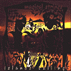

|

Islands Calling
Islands Calling, Magical Strings' ninth release, has been
hailed by the leading music trade press as "...their best album
yet." Islands Calling bathes the listener in a sound rich
with Images of forgotten worlds and magical lands. The theme of
this new album is a culmination of Philip and Pam's lives and
world travels, exploring the furthest reaches of Celtic influence
and other harp-like instruments to form an invisible bridge that
joins the music of different cultures. While still embracing its
Celtic roots, Islands Calling moves from Ireland to Madagascar,
from Jamaica to Puget Sound, from Maine's Penboscot Bay to Maui,
to become a joyful musical journey to islands around the world.
Special guest appearances on Islands Calling include the
brilliant steel string guitarist Alex de Grassi, master cellist
Eugene Friesen, slack-key great Keola Beamer, Irish piper virtuoso
Tom Creegan, and producer Cary Black. Featured also are three
Boulding family members: Brenin on cello, Morgan on field organ,
and Brittany on violin.
Islands Calling is a personal musical pilgrimage to some
of the most enchanting islands in the world. A voyage not to be
missed.
See a review
of Islands Calling written from the Folk & Acoustic
Music Exchange.
Here are several Islands Calling sound clips (mp3):
Malagasy Greeting
Jamaican Port O' Call
Winter into Spring
Father Dollard's Hornpipe
MP3 sound clips require a software mp3 player. If you don't yet
have one installed, you can download a freeware version, such
as RealOne
Player OR Microsoft
Media Player OR Winamp Player. |
Recordings

Islands Calling

Out of Print
Add
to Shopping Cart
|